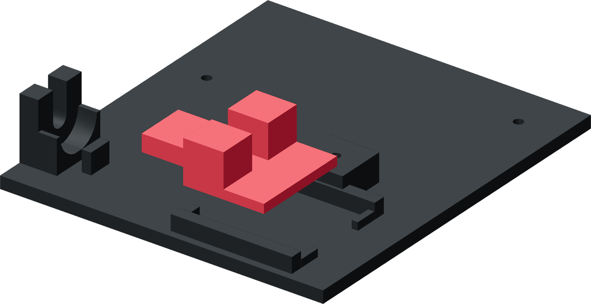

Drop B between the rails
The ram is open above the tube and at both ends. Its two feet slide on the base.

- Set base A flat on the bench. Place ram B between the two rails with its feet down and fork up.
- Slide the ram toward the donor until both guide feet meet the paired front stops.
- Slide it back about 20 mm, then return it to the stop by hand. Keep it square between the rails.
Finished when
The ram slides freely throughout the working stroke and both guide feet meet the front stops together. Remove a string or raised print edge if it catches.